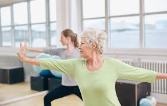

<!DOCTYPE html>
<html>
<head>
	<style></style>
</head>
<body bgcolor="gray">

</html>
<!DOCTYPE html>
<html>
<head>
	<title> Health and Welness </title>
</head>
<style>
	
</style>
<h1 style="color:black;font-family:Times;text-align: left;font-size: 25px">How to Stay Physically Healthy </h1>

<a href="file:///D:/2017%20Academics/Modules/Webdesign/Week%203/Healthier%20and%20Happier%20Lifestyle.html"><button class="btn-Home">Home</button></a>
<a href="file:///D:/2017%20Academics/Modules/Webdesign/Week%203/About%20Us.html"><button class="btn-About Us">About Us</button></a>
<a href="file:///D:/2017%20Academics/Modules/Webdesign/Week%203/How%20to%20keep%20your%20physical%20health.html"><button class="btn-"> How to Stay Physically Healthy</button></a>
<a href="file:///D:/2017%20Academics/Modules/Webdesign/Week%203/The%20best%20way%20to%20manage%20stress.html"><button class="btn-About Us"> The Best Way to Manage Up Your Stress </button></a>


<p style="color:black;font-family:Times;text-align: left;font-size: 18px">How much physical activity is enough?
Experts recommend 150 minutes of moderate physical activity every week for basic health benefits; if weight loss is your goal, you may need more. Your 150 minutes can be spread out through the week as you please
How to get more physical activity
Incorporate some of these tips into your daily routine and watch your fitness improve!
<li>Take the stairs instead of the elevator. </li> <br>
<li>Ride an exercise bike while you watch the evening news.</li> <br>
<li>Pace while talking on the phone. </li> <br>
<li>Walk around the block on your lunch hour or during a break. </li> <br>
<li>Make a ritual out of weekend family walks or bike rides.</li> <br>
<li>Take dance lessons or an aerobics class.</li> <br>
<li>Buy an exercise or yoga DVD (and use it!). </li> <br>
<li>Join a fitness club and work with a fitness trainer. </li> <br>
<h2 style="color:black;font-family:Times;text-align: left;font-size: 25px">Tips for staying physically active: </h2>

<table border="4" width="10%">
   <tr>
   	<th>Run Run</th>
   	<th>Swimm</th>
   	<th>Dance</th>
   	<th>Join a Club</th>
   </tr>

   <tr>
   	<td></td>
   	<td></td>
   	<td></td>
   	<td></td>
   </tr>
   

	


</table>
<li>Choose activities you like to do. You'll be more likely to stick with something you enjoy. Think about whether you like to be inside or outside, alone or with people and what time of day is best for you. </li> <br>
<li>Find a partner -- you're more likely to keep up with your new routine. </li> <br>
<li>Congratulate yourself for all the good things you've done for your body and get started again as soon as your schedule allows. </li> <br>
<li>Vary your routine. You may be less likely to get bored if you try different activities. Walk one day; bicycle the next. </li> <br>
<li>Commit to a realistic schedule. You might want to vary the times and locations of your activities, to keep things interesting - unless you're more comfortable with a set, predictable schedule, which is fine too! </li> <br>
<li>Sneak in a few minutes of physical activity whenever you can. Take a 10-minute walk after you eat lunch and before you start back to work. </li> <br>
 </p>
</body>
</html>